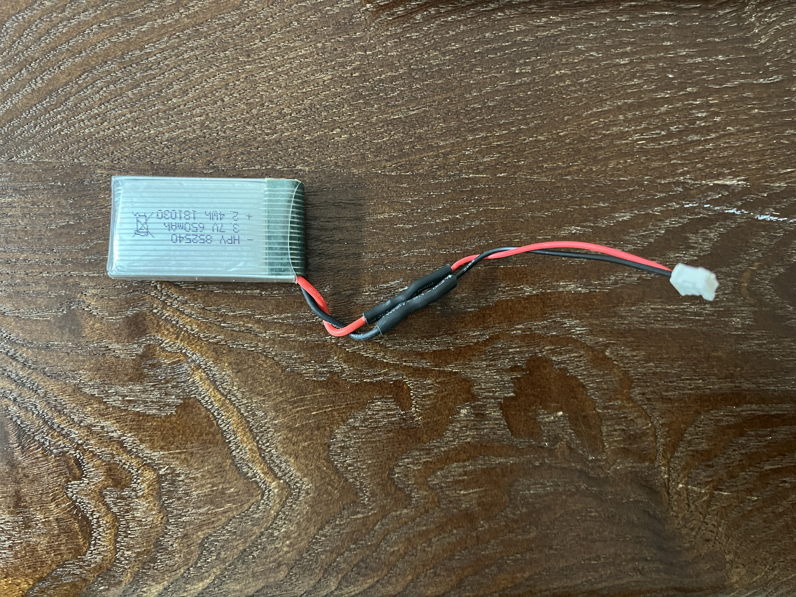
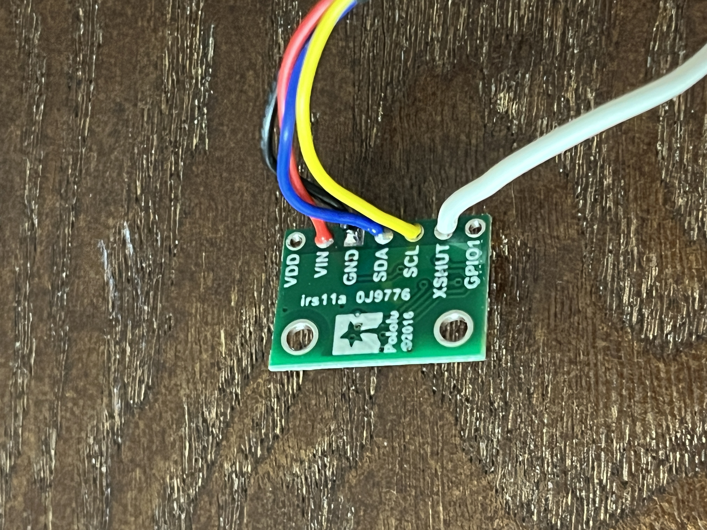
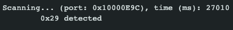
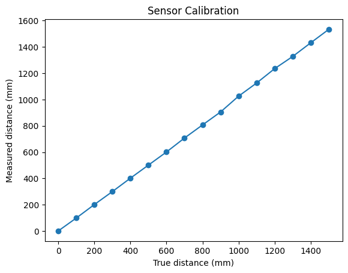
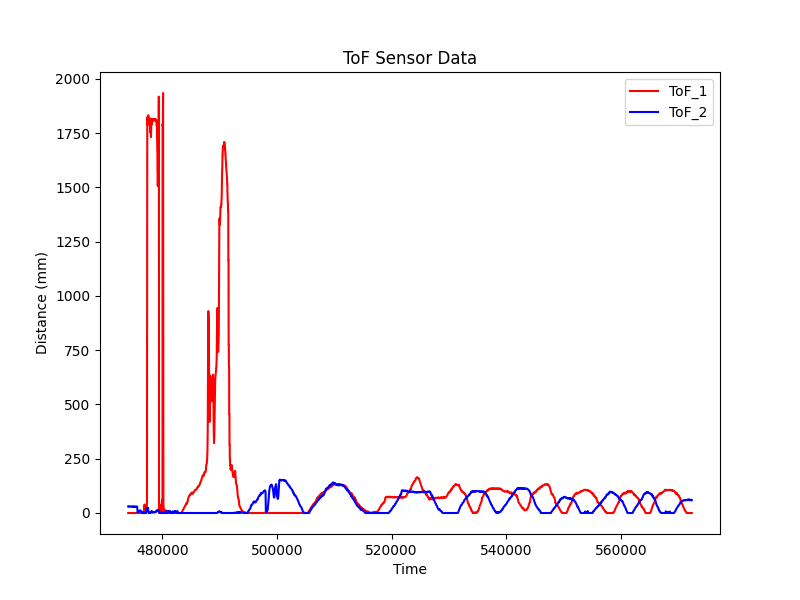

The purpose of this lab was to setup the two ToF sensors and test their reliability. This lab also introduced us to basic soldering.
We read the manual and datasheet for the ToF, which was the VL53L1X model. The 2 ToF sensors have the same address, so to get around this, we will solder a shutdown pin on one of the sensors to change it's address on boot up. We must also think about where to place the ToF sensors to avoid missing obstacles. We will place the sensors at the front and back of the robot. We would miss obstacles on the side of the robot and obstacles out of the field of view (i.e objects too close to the robot such as next to the wheel). This means we could also pick a configuration with 1 sensor at the front and 1 on the side, depending on our needs.
We want the Artemis Board to run separately from the laptop, so we need to attach a battery. We will use the battery that came with the RC car and change the connector to fit into the Artemis board.
Next, we need to solder QWIIC cables to the sensors. The QWIIC connector has 4 cables which correspond to power/VIn (red), GND (black), SDA (blue), and SCL (yellow). We solder these wires to the corresponding ports on the sensor board. For 1 of the sensor boards, we also solder a wire to the XSHUT pin and connect that to one of the GPIO pins on the Artemis (pin 8 in this case).
We use the "Example1_wire_I2C" file to test the I2C connection between our board and the sensor. It prints out the address of the ToF (only 1 at this point) sensor. The address was found to be 0x29 for both ToF sensors.
The ToF sensors have 2 distance settings, for short(1.3m) and long(4m) distances. We will test the short distance setting. We set up an experiment where we gather average readings from the sensor from a distance of 0 meters to 1.5m in increments of 100mm.
We see that the sensor is relatively accurate, even past the recommended distance. The distance measurements above are averages. There was only a +/- 1mm discrepenacy below 1000mm, and the +/- 2-3mm above that.
When both sensors are connected, they have the same address, so we must change their addresses. We will utilize the shutdown pin on one of the sensors. When we initialize, we will shutdown one sensor, send a command the change the address of the "on" sensor, and then turn the "off" sensor back on. This must be done each time the system powers on because the sensor addresses reset when powered off. This was done with this code:
digitalWrite(SHUTDOWN_PIN, LOW);
int resetAddr = distanceSensor2.getI2CAddress();
if (resetAddr == DEFAULT_ADDR){
distanceSensor2.setI2CAddress(NEW_ADDR);
Serial.print("Sensor 2 address changed to 0x");
Serial.println(distanceSensor2.getI2CAddress(), HEX);
}
delay(1000);
digitalWrite(SHUTDOWN_PIN, HIGH);
Now, we need to test the speed of the sensor vs. the Artemis clock. We ran this code to print out data at every cycle of the Artemis, and based on the results, we see the same sensor data is repeatedly printed. This suggests that new data is not being collected, which means the sensor is slower than the Artemis.
We send the collected data to the laptop via bluetooth and plot it.
